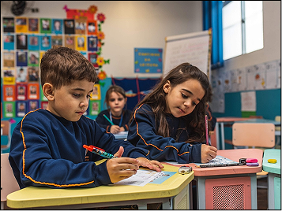

PÁGINA INICIAL
Bem-vindo! ---
Portal acadêmico da Escola ABC
Escola celebra excelente desempenho dos alunos no encerramento do trimestre

A Escola ABC anunciou nesta semana o lançamento oficial do seu novo Portal do Aluno, uma plataforma digital criada para facilitar a rotina acadêmica dos estudantes e aproximar ainda mais a comunidade escolar da tecnologia. Com o novo sistema, os alunos poderão acessar informações importantes de forma rápida e segura, como: Consulta de notas e boletins, frequência escolar, calendário acadêmico, avisos e comunicados da escola, materiais de apoio e tarefas online, além da solicitação de documentos escolares. Segundo a direção da Escola ABC, o objetivo é oferecer mais praticidade para estudantes e responsáveis, além de tornar a comunicação interna mais eficiente.